import rastereasy
Read geoimage
In rastereasy, one of the main class to deal with georeferenced images is Geoimage. It contains the main functions (for resampling, reprojection, stack, plotting, …). Let’s start by opening and plotting an image, some bands or making color compositions
Open an image
Read basic information of the image, without open it (parameter meta_only=True)
name_im='./data/demo/sentinel.tif'
image=rastereasy.Geoimage(name_im,meta_only=True)
# Alternatively, we can give names to bands
names = {"NIR":8,"G":3,"CO" : 1,"SWIR2":11,"B": 2,"R":4,"RE1":5,"RE2":6,"RE3":7,"WA":9,"SWIR1":10,"SWIR3":12}
image_names=rastereasy.Geoimage(name_im,names=names)
General information
The function ìnfo() gives general informations on the opened image
image.info()
image_names.info()
- Size of the image:
- Rows (height): 1000
- Cols (width): 1000
- Bands: 12
- Spatial resolution: 10.0 meters / degree (depending on projection system)
- Central point latitude - longitude coordinates: (7.04099599, 38.39058840)
- Driver: GTiff
- Data type: int16
- Projection system: EPSG:32637
- Nodata: -32768.0
- Given names for spectral bands:
{'1': 1, '2': 2, '3': 3, '4': 4, '5': 5, '6': 6, '7': 7, '8': 8, '9': 9, '10': 10, '11': 11, '12': 12}
- Size of the image:
- Rows (height): 1000
- Cols (width): 1000
- Bands: 12
- Spatial resolution: 10.0 meters / degree (depending on projection system)
- Central point latitude - longitude coordinates: (7.04099599, 38.39058840)
- Driver: GTiff
- Data type: int16
- Projection system: EPSG:32637
- Nodata: -32768.0
- Given names for spectral bands:
{'CO': 1, 'B': 2, 'G': 3, 'R': 4, 'RE1': 5, 'RE2': 6, 'RE3': 7, 'NIR': 8, 'WA': 9, 'SWIR1': 10, 'SWIR2': 11, 'SWIR3': 12}
Open an entire image
See help for initializing a Geoimage
help(rastereasy.Geoimage.__init__)
Help on function __init__ in module rastereasy.rastereasy:
__init__(self, source_name=None, meta_only=False, names=None, history=False, data=None, meta=None, georef=None, target_crs='EPSG:4326', area=None, extent='pixel')
Initialize a Geoimage object from a file or data array with metadata.
Parameters
----------
source_name : str, optional
Path to a geoimage (.tif, .jp2) image file to load.
If provided, the image data and metadata
will be read from this file.
meta_only : bool, optional
If True, do not read the image but just
the meta information (useful for image.info()).
names : dict, optional
Dictionary mapping band names to
band indices (e.g., {'NIR': 1, 'R': 2, 'G': 3}).
If not provided, bands will be
named numerically ('1', '2', '3', ...).
area : tuple, optional
To read only a window of the image
If based on pixel coordinates, you must indicate
- the row/col coordinades of
the north-west corner (deb_row,deb_col)
- the row/col coordinades of
the south-east corner (end_row,end_col)
in a tuple `area = ((deb_row,end_row),(deb_col,end_col))`
If based on latitude/longitude coordinates, you must indicate
- the lat/lon coordinades of the north-west corner (lat1,lon1)
- the lat/lon coordinades of the south-east corner (lat2,lon2)
`area = ((lon1,lon2),(lat1,lat2))`
If not provide, read the entire image
extent : str, optional
if `area` is given, precise if the coordinates
are in pixels (extent = "pixel", default)
or latitude/longitude (extent = "latlon")
history : bool, optional
Whether to track modification history for the image.
Default is False.
data : numpy.ndarray, optional
Image data to initialize the object with.
Must be provided with `meta`.
Shape should be (bands, rows, cols).
meta : dict, optional
Metadata dictionary containing rasterio
metadata fields (e.g., crs, transform).
Required if `data` is provided.
georef : bool, optional
Whether the image is georeferenced.
If None, will be determined from metadata.
target_crs : str, optional
Target coordinate reference system
if reprojection is needed during loading.
Default is "EPSG:4326".
Attributes
----------
image : numpy.ndarray
The image data array with shape (bands, rows, cols).
shape : tuple
The dimensions of the image as (rows, cols).
nb_bands : int
The number of spectral bands in the image.
resolution : float
The spatial resolution of the image (pixel size in map units).
names : dict
Dictionary mapping band names to band indices.
nodata : float or int
Value used to represent no data or invalid pixels.
Examples
--------
>>> # Read only meta information
>>> img = Geoimage("landsat_image.tif",meta_only=True)
>>> img.info()
>>>
>>> # Read an entire Geoimage from a file
>>> img = Geoimage("landsat_image.tif")
>>> img.info()
>>>
>>> # Read a window of a file from pixel coordinates
>>> You must indicate
>>> - the row/col coordinades of
>>> the north-west corner (deb_row,deb_col)
>>> - the row/col coordinades of
>>> the south-east corner (end_row,end_col)
>>> in a tuple `((deb_row,end_row),(deb_col,end_col))`
>>> img = Geoimage("landsat_image.tif", area=((200,500),(240,600)))
>>> img.info()
>>>
>>> # Read a window of a file from lat/lon coordinates (parameter extent='latlon')
>>> You must indicate
>>> - the lat/lon coordinades of the north-west corner (lat1,lon1)
>>> - the lat/lon coordinades of the south-east corner (lat2,lon2)
>>> in a tuple `((lon1,lon2),(lat1,lat2))`
>>> img = Geoimage("landsat_image.tif", area=((38.36,38.41),(7.06,7.02)),extent='latlon'))
>>> img.info()
>>>
>>> # Create a Geoimage from a NumPy array with metadata
>>> meta = {'driver': 'GTiff', 'width': 100, 'height': 100, 'count': 3,
>>> ... 'crs': CRS.from_epsg(4326), 'transform': Affine(0.1, 0, 0, 0, -0.1, 0)}
>>> data = np.zeros((3, 100, 100))
>>> img = Geoimage(data=data, meta=meta)
>>>
>>> # Create a Geoimage with custom band names
>>> img = Geoimage("landsat_image.tif", names={'R': 1, 'G': 2, 'B': 3, 'NIR': 4})
>>>
>>> # Create a Geoimage with custom band names
>>> img = Geoimage("landsat_image.tif", names={'R': 1, 'G': 2, 'B': 3, 'NIR': 4})
name_im='./data/demo/sentinel.tif'
image=rastereasy.Geoimage(name_im)
Make a color composition
See the dedicated example. By default, the three first bands are used
# By default, coordinates are lat/lon
image.colorcomp()
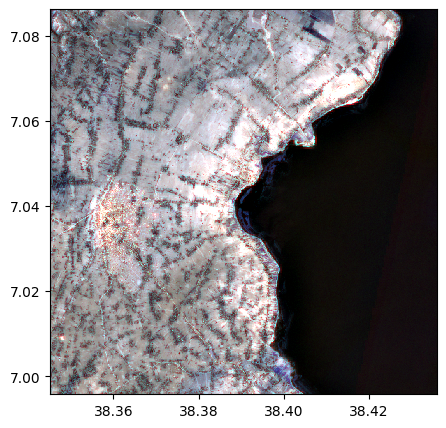
# To have coordinates in pixel
image.colorcomp(extent='pixel')
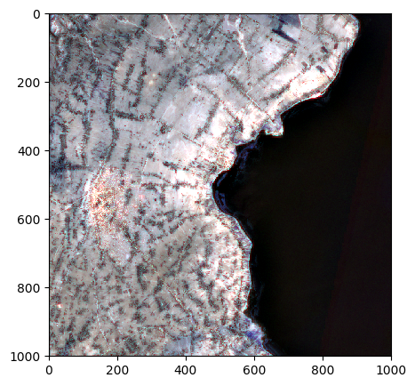
# To remove coordinates
image.colorcomp(extent='pixel')
Open a window of the image based on pixel coordinates
You must indicate
the row/col coordinades of the north-west corner (deb_row,deb_col)
the row/col coordinades of the south-east corner (end_row,end_col)
in a tuple ((deb_row,end_row),(deb_col,end_col))
deb_row=35
end_row=712
deb_col=40
end_col=450
area_pixel=((deb_row,end_row),(deb_col,end_col))
image=rastereasy.Geoimage(name_im,area=area_pixel)
image.info()
image.colorcomp(extent='pixel')
- Size of the image:
- Rows (height): 677
- Cols (width): 410
- Bands: 12
- Spatial resolution: 10.0 meters / degree (depending on projection system)
- Central point latitude - longitude coordinates: (7.05240988, 38.36748819)
- Driver: GTiff
- Data type: int16
- Projection system: EPSG:32637
- Nodata: -32768.0
- Given names for spectral bands:
{'1': 1, '2': 2, '3': 3, '4': 4, '5': 5, '6': 6, '7': 7, '8': 8, '9': 9, '10': 10, '11': 11, '12': 12}
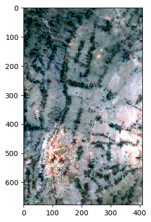
Open a window of the image based on longitude / latitude coordinates
You must indicate
the lat/lon coordinades of the north-west corner (lat1,lon1)
the lat/lon coordinades of the south-east corner (lat2,lon2)
in a tuple ((lon1,lon2),(lat1,lat2))
lat1=7.06
lat2=7.02
lon1=38.36
lon2=38.41
area_ll=((lon1,lon2),(lat1,lat2))
image_window_latlon=rastereasy.Geoimage(name_im,area=area_ll,extent='latlon')
image_window_latlon.colorcomp()
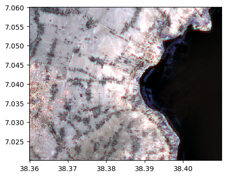
Save an image
The function .save() enables to save an image
image_names.save('./data/results/save/save_image.tif')
Now we can reload it
image_reloaded=rastereasy.Geoimage('./data/results/save/save_image.tif')
image_reloaded.info()
- Size of the image:
- Rows (height): 1000
- Cols (width): 1000
- Bands: 12
- Spatial resolution: 10.0 meters / degree (depending on projection system)
- Central point latitude - longitude coordinates: (7.04099599, 38.39058840)
- Driver: GTiff
- Data type: int16
- Projection system: EPSG:32637
- Nodata: -32768.0
- Given names for spectral bands:
{'CO': 1, 'B': 2, 'G': 3, 'R': 4, 'RE1': 5, 'RE2': 6, 'RE3': 7, 'NIR': 8, 'WA': 9, 'SWIR1': 10, 'SWIR2': 11, 'SWIR3': 12}
Read some informations
Apart from the .info() function, get_meta() outputs rasterio metadata
image_names.get_meta()
{'driver': 'GTiff',
'dtype': 'int16',
'nodata': -32768.0,
'width': 1000,
'height': 1000,
'count': 12,
'crs': CRS.from_wkt('PROJCS["WGS 84 / UTM zone 37N",GEOGCS["WGS 84",DATUM["WGS_1984",SPHEROID["WGS 84",6378137,298.257223563,AUTHORITY["EPSG","7030"]],AUTHORITY["EPSG","6326"]],PRIMEM["Greenwich",0,AUTHORITY["EPSG","8901"]],UNIT["degree",0.0174532925199433,AUTHORITY["EPSG","9122"]],AUTHORITY["EPSG","4326"]],PROJECTION["Transverse_Mercator"],PARAMETER["latitude_of_origin",0],PARAMETER["central_meridian",39],PARAMETER["scale_factor",0.9996],PARAMETER["false_easting",500000],PARAMETER["false_northing",0],UNIT["metre",1,AUTHORITY["EPSG","9001"]],AXIS["Easting",EAST],AXIS["Northing",NORTH],AUTHORITY["EPSG","32637"]]'),
'transform': Affine(10.0, 0.0, 427690.0,
0.0, -10.0, 783330.0)}
To get some more useful information
print('number of bands = ',image.nb_bands)
print('shape = ',image.shape)
print('spatial resolution = ',image.resolution)
print('lat / lon of central pixel = ',image.get_latlon_coordinates())
number of bands = 12
shape = (677, 410)
spatial resolution = 10.0
lat / lon of central pixel = (7.052409883832736, 38.367488186916184)
Values in the image
Values in some pixel locations
image=rastereasy.Geoimage(name_im)
# Extract the specrum in pixel 309,223
image[309,223]
array([ 867, 1144, 1456, 1960, 2246, 2324, 2444, 2380, 2566, 2597, 3252,
3149], dtype=int16)
# Extract the specra in all cols of line 309
image[309,:]
array([[ 514, 514, 514, ..., 257, 257, 257],
[ 751, 758, 596, ..., 269, 279, 281],
[1084, 1112, 898, ..., 484, 483, 480],
...,
[3079, 3079, 3079, ..., 187, 187, 187],
[2775, 2555, 2555, ..., 147, 147, 147],
[2399, 2000, 2000, ..., 115, 115, 117]],
shape=(12, 1000), dtype=int16)
# Extract the image in band 3
image[:,:][3]
array([[ 567, 645, 690, ..., 324, 322, 335],
[ 579, 590, 608, ..., 346, 342, 335],
[ 558, 610, 645, ..., 338, 334, 327],
...,
[1518, 1750, 1694, ..., 339, 348, 350],
[1534, 1652, 1688, ..., 346, 342, 342],
[1636, 1694, 1750, ..., 347, 339, 336]],
shape=(1000, 1000), dtype=int16)
# all spectral values in a given pixel
row=20
col=10
print('spectral values in',row,',',col,' : ',image[row,col])
print('size of all spectral values in row',row,':', image[row,:].shape)
print('size of all spectral values in col',col,':', image[:,col].shape)
# check consistency
pixel_row = 15
pixel_col = 22
print('diff with table with values at row ',row,' in pixel col',pixel_col,':', image[row,:][:,pixel_col]-image[row,pixel_col])
print('diff with table with values at col ',col,' in pixel row',pixel_row,':', image[:,col][:,pixel_row]-image[pixel_row,col])
spectral values in 20 , 10 : [ 499 542 869 813 1591 3169 3654 3717 3856 3704 2732 1716]
size of all spectral values in row 20 : (12, 1000)
size of all spectral values in col 10 : (12, 1000)
diff with table with values at row 20 in pixel col 22 : [0 0 0 0 0 0 0 0 0 0 0 0]
diff with table with values at col 10 in pixel row 15 : [0 0 0 0 0 0 0 0 0 0 0 0]
Min, Max, Sum, Mean, Std, Median, …
Global values
# Let's crop the image to have different shapes in row/col
image=rastereasy.Geoimage(name_im)
image.crop(area=((10,100),(50,70)),inplace=True)
print('Shape of the image (lig x col) : ',image.shape)
print('Number of channels of the image : ',image.nb_bands)
Shape of the image (lig x col) : (90, 20)
Number of channels of the image : 12
### Global min, max, std, ...
print('Global minimum of the image', image.min())
print('Global minimum of the image', image.max())
print('Global std of the image', image.std())
print('Global mean of the image', image.mean())
print('Global median of the image', image.median())
print('Global sum of the image', image.sum())
Global minimum of the image 273
Global minimum of the image 3836
Global std of the image 890.1268204217575
Global mean of the image 1958.3739814814815
Global median of the image 2261.0
Global sum of the image 42300878
Values per row, col, band, pixel
help(image.min)
Help on method min in module rastereasy.rastereasy:
min(axis=None) method of rastereasy.rastereasy.Geoimage instance
Calculate the minimum value along a specified axis.
Parameters
----------
axis : {'band', 'row', 'col', None}, optional
The axis along which to compute the minimum:
- 'band': Minimum across spectral bands for each pixel
- 'row': Minimum across rows (lines) for each band and column
- 'col': Minimum across columns for each band and row
- 'pixel': Minimum across pixels for each bands
- None: Global minimum of the entire image
Default is None.
Returns
-------
float or numpy.ndarray
- If axis=None: A single value representing the global minimum
- If axis='band': Array with shape (nb_rows,nb_cols) containing mins along bands
- If axis='row': Array with shape (nb_bands,nb_cols) containing mins along rows
- If axis='col': Array with shape (nb_bands,nb_rows) containing mins along cols
- If axis='pixel': Array with shape (nb_bands) containing mins along all pixels for each band
Raises
------
ValueError
If an invalid axis is specified
Examples
--------
>>> min_value = image.min() # Global minimum value
>>> print(f"Minimum pixel value: {min_value}")
>>>
>>> band_mins = image.min(axis='pixel') # Minimum along all pixels for each band
for axis in ['band','row','col','pixel']:
mini=image.min(axis=axis)
print('Minimum on axis ',axis, 'gives a numpy table of size',mini.shape)
Minimum on axis band gives a numpy table of size (90, 20)
Minimum on axis row gives a numpy table of size (12, 20)
Minimum on axis col gives a numpy table of size (12, 90)
Minimum on axis pixel gives a numpy table of size (12,)
As we can see in the help,
If
axis=None: A single value representing the global minimumIf
axis='band': Array with shape(nb_rows,nb_cols)containing mins along bandsIf
axis='row': Array with shape(nb_bands,nb_cols)containing mins along rowsIf
axis='col': Array with shape(nb_bands,nb_rows)containing mins along colsIf
axis='pixel': Array with shape(nb_bands,)containing mins along all pixels for each band
The same holds for max, sum, mean, median
print('Overall min of the image along the channels : ',image.min(axis='pixel'),'\n')
# As we can see, we have 12 values corresponding to the minimum in each image'
Overall min of the image along the channels : [ 372 273 557 497 1066 1878 1953 1830 2143 2456 2106 1329]
help(image.max)
print('Maximum of the image for each band: ', image.max(axis = 'band'),'\n')
Help on method max in module rastereasy.rastereasy:
max(axis=None) method of rastereasy.rastereasy.Geoimage instance
Calculate the maximum value along a specified axis.
Parameters
----------
axis : {'band', 'row', 'col', None}, optional
The axis along which to compute the maximum:
- 'band': Maximum across spectral bands for each pixel
- 'row': Maximum across rows (lines) for each band and column
- 'col': Maximum across columns for each band and row
- 'pixel': Maximum across pixels for each bands
- None: Global maximum of the entire image
Default is None.
Returns
-------
float or numpy.ndarray
- If axis=None: A single value representing the global maximum
- If axis='band': Array with shape (nb_rows,nb_cols) containing max along bands
- If axis='row': Array with shape (nb_bands,nb_cols) containing max along rows
- If axis='col': Array with shape (nb_bands,nb_rows) containing max along cols
- If axis='pixel': Array with shape (nb_bands) containing maxs along all pixels for each band
Raises
------
ValueError
If an invalid axis is specified
Examples
--------
>>> max_value = image.max() # Global maximum value
>>> print(f"Maximum pixel value: {max_value}")
>>>
>>> band_maxs = image.max(axis='pixel') # Maximum along all pixels for each band
Maximum of the image for each band: [[3225 3290 3290 ... 2807 2807 3135]
[3304 3403 3403 ... 2625 2625 2849]
[3304 3403 3403 ... 2625 2625 2849]
...
[3135 2960 2960 ... 2922 2922 2997]
[3135 2960 2960 ... 2922 2922 2997]
[3062 3097 3097 ... 2895 2895 2954]]
Plot image (colorcomp or bands)
Note on axes (pixel vs latlong)
By default, rastereasy plots images using latitude and longitude coordinates. If you want to plot with pixel coordinates, put the parameter extent = 'pixel'
Color composition via colorcomp function
On the entire image
image=rastereasy.Geoimage(name_im)
help(image.colorcomp)
Help on method colorcomp in module rastereasy.rastereasy:
colorcomp(bands=None, dest_name='', percentile=2, fig_size=(5, 5), title='', extent='latlon', zoom=None, pixel=True) method of rastereasy.rastereasy.Geoimage instance
Create and display a color composite image from selected bands.
This method creates an RGB color composite by assigning three bands to the red,
green, and blue channels. It's useful for creating false color compositions,
natural color images, or any three-band visualization.
Parameters
----------
bands : list of str, optional
List of three band identifiers to use for the RGB composite (in order: R, G, B).
Can be band names (e.g., ["NIR", "R", "G"]) or indices (e.g., ["4", "3", "2"]).
If None, uses the first three bands in the image.
Default is None.
dest_name : str, optional
Path to save the color composite image. If empty, the image is not saved.
Default is ''.
percentile : int, optional
Percentile value for contrast stretching (e.g., 2 for a 2-98% stretch).
This enhances the visual contrast of the image.
Default is 2.
fig_size : tuple, optional
Size of the figure in inches as (width, height).
Default is DEF_FIG_SIZE.
title : str, optional
Title for the visualization.
Default is ''.
extent : {'latlon', 'pixel', None}, optional
Type of extent to use for the plot:
- 'latlon': Use latitude/longitude coordinates (default)
- 'pixel': Use pixel coordinates
- None: Don't show coordinate axes
zoom : tuple, optional
To plot only a window of the image
If based on pixel coordinates, you must indicate
- the row/col coordinades of
the north-west corner (deb_row,deb_col)
- the row/col coordinades of
the south-east corner (end_row,end_col)
in a tuple `zoom = ((deb_row,end_row),(deb_col,end_col))`
If based on latitude/longitude coordinates, you must indicate
- the lat/lon coordinades of the north-west corner (lat1,lon1)
- the lat/lon coordinades of the south-east corner (lat2,lon2)
`zoom = ((lon1,lon2),(lat1,lat2))`
If not provide, perform on the entire image
pixel : bool, optional
Coordinate system flag, if zoom is given:
- If True: Coordinates are interpreted as pixel indices
- If False: Coordinates are interpreted as geographic coordinates
Default is True.
Returns
-------
None
This method displays and/or saves the color composite but doesn't return any values.
Raises
------
ValueError
If the image has only 2 bands, which is not enough for an RGB composite.
If an invalid extent value is provided.
Examples
--------
>>> # Create a natural color composite (for Landsat/Sentinel-2 style ordering)
>>> image.colorcomp(bands=["R", "G", "B"])
>>>
>>> # Create a color-infrared composite (vegetation appears red)
>>> image.colorcomp(bands=["NIR", "R", "G"], title="Color-Infrared Composite")
>>>
>>> # Zoom and save a false color composite
>>> image.colorcomp(bands=["SWIR1", "NIR", "G"], dest_name="false_color.tif",zoom=((100,300),(200,400)))
>>>
>>> # Change the contrast stretch
>>> image.colorcomp(bands=["R", "G", "B"], percentile=5) # More aggressive stretch
Notes
-----
Common band combinations for satellite imagery include:
- Natural color: R, G, B (shows the scene as human eyes would see it)
- Color-infrared: NIR, R, G (vegetation appears red, useful for vegetation analysis)
- Agriculture: SWIR, NIR, B (highlights crop health and soil moisture)
- Urban: SWIR, NIR, R (emphasizes urban areas and bare soil)
# colorcomp with 3 first bands and show pixel coordinates
image.colorcomp(extent='pixel')
On a zoom on the image
By specifying pixel coordinates
image.colorcomp(bands=['4','3','6'], zoom = ((200,400),(400,800)), extent='pixel')
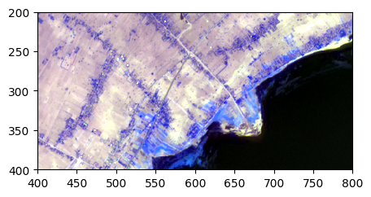
By specifying lat/lon coordinates
image.colorcomp(bands=[8,8,3], zoom=((38.36,38.40),(7.07,7.04)), pixel=False)
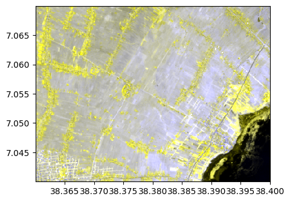
Saving a color composition
image_names.colorcomp(bands=["R","G","B"],dest_name='./data/results/colorcomp/S2_colorcomp_R_G_B.tif')
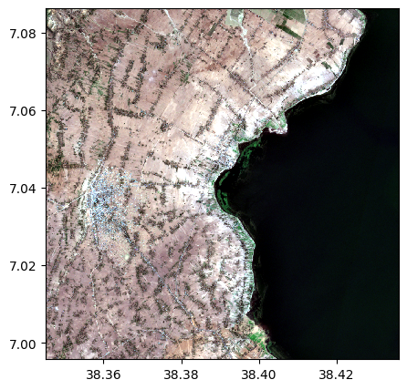
image_names.colorcomp(bands=["R","G","NIR"], zoom=((38.36,38.40),(7.07,7.04)), pixel=False,dest_name='./data/results/colorcomp/test_colorcomp_R_G_NIR_zoom.tif')
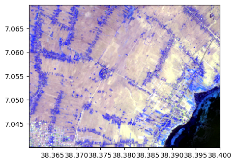
By bands
help(image.visu)
Help on method visu in module rastereasy.rastereasy:
visu(bands=None, title='', percentile=0, fig_size=(5, 5), cmap=None, colorbar=False, extent='latlon', zoom=None, pixel=True) method of rastereasy.rastereasy.Geoimage instance
Visualize one or more bands of the image.
This method provides a flexible way to display individual bands or multiple bands
as separate figures. Unlike colorcomp, which creates RGB composites, this method
displays each band in grayscale or with a specified colormap.
Parameters
----------
bands : str, list of str, or None, optional
The bands to visualize:
- If None: Displays all bands separately
- If a string: Displays a single specified band
- If a list: Displays each specified band separately
Default is None.
title : str, optional
Base title for the visualization. Band names will be appended.
Default is ''.
percentile : int, optional
Percentile value for contrast stretching (e.g., 2 for a 2-98% stretch).
Default is 2.
fig_size : tuple, optional
Size of the figure in inches as (width, height).
Default is DEF_FIG_SIZE.
cmap : str, optional
Matplotlib colormap name to use for display.
Examples: 'viridis', 'plasma', 'gray', 'RdYlGn'
Default is None (uses matplotlib default).
colorbar : bool, optional
Whether to display a colorbar next to each image.
Default is False.
extent : {'latlon', 'pixel', None}, optional
Type of extent to use for the plot:
- 'latlon': Use latitude/longitude coordinates (default)
- 'pixel': Use pixel coordinates
- None: Don't show coordinate axes
zoom : tuple, optional
To visualize only a window of the image
If based on pixel coordinates, you must indicate
- the row/col coordinades of
the north-west corner (deb_row,deb_col)
- the row/col coordinades of
the south-east corner (end_row,end_col)
in a tuple `zoom = ((deb_row,end_row),(deb_col,end_col))`
If based on latitude/longitude coordinates, you must indicate
- the lat/lon coordinades of the north-west corner (lat1,lon1)
- the lat/lon coordinades of the south-east corner (lat2,lon2)
`zoom = ((lon1,lon2),(lat1,lat2))`
If not provide, visualize the entire image
pixel : bool, optional
Coordinate system flag, if zoom is given:
- If True: Coordinates are interpreted as pixel indices
- If False: Coordinates are interpreted as geographic coordinates
Default is True.
Examples
--------
>>> # Visualize all bands
>>> image.visu()
>>>
>>> # Visualize a single band with a colormap and colorbar
>>> image.visu("NIR", cmap='plasma', colorbar=True, title="Near Infrared Band")
>>>
>>> # Visualize selected bands
>>> image.visu(["Red", "NIR", "NDVI"], fig_size=(10, 8))
>>>
>>> # Visualize selected bands on a zoom
>>> image.visu(["Red", "NIR", "NDVI"], fig_size=(10, 8), zoom = ((100,200),(450,600)))
Notes
-----
This method is useful for:
- Examining individual spectral bands in detail
- Comparing several derived indices side by side
- Applying different colormaps to highlight specific features
- Visualizing single-band thematic data (e.g., elevation, classification results)
Visu af all bands
image.visu(fig_size=(5,5))
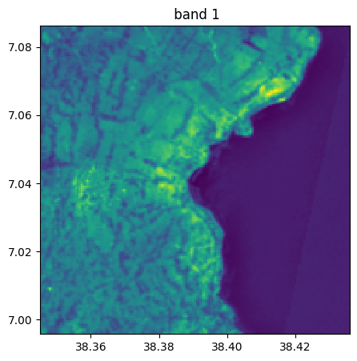
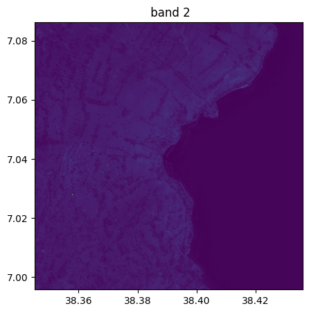
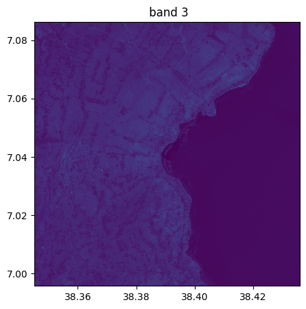
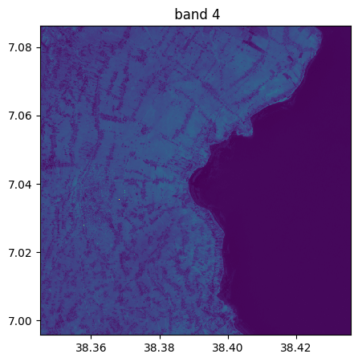
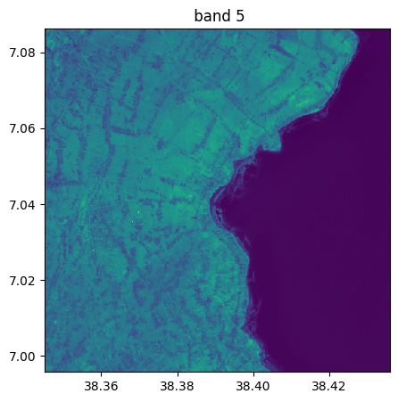
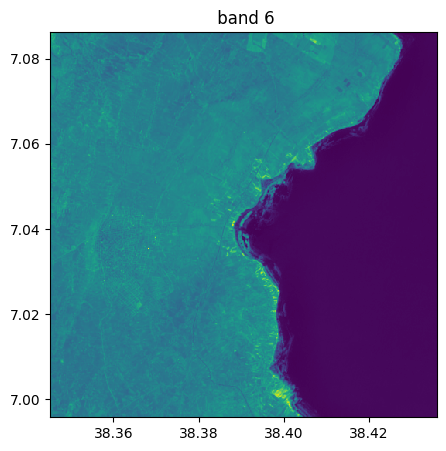
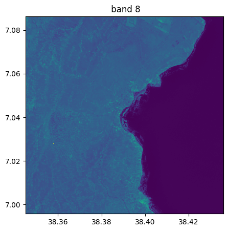
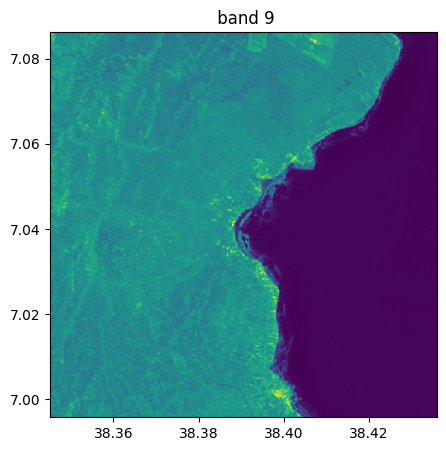
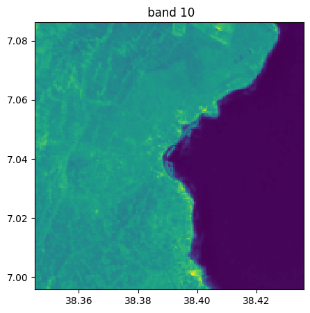
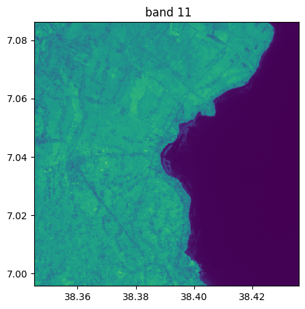
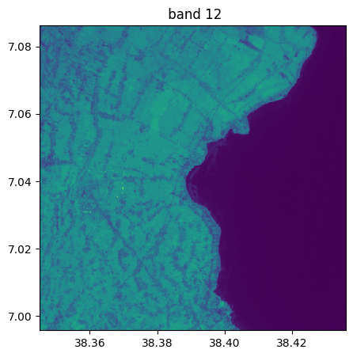
image.visu(bands=8)
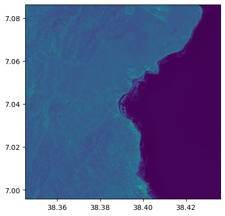
image_names.visu(["SWIR1","NIR"])
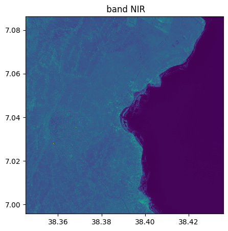
Visu af som specific bands with pixel extent
image.visu(bands=['4','7','1'], extent = 'pixel')
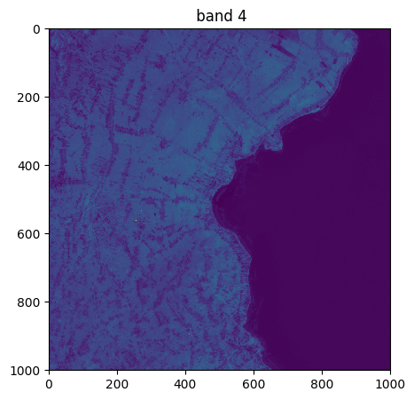
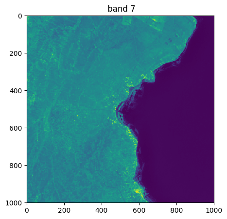
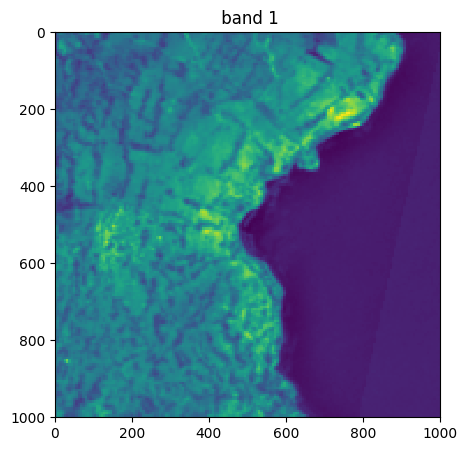
Visu af som specific bands and zoom
image.visu(bands=['4','7','1'], extent = 'pixel', zoom=((600,800),(450,850)))
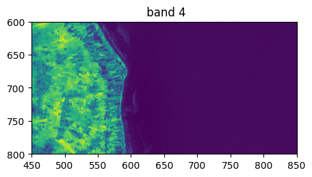
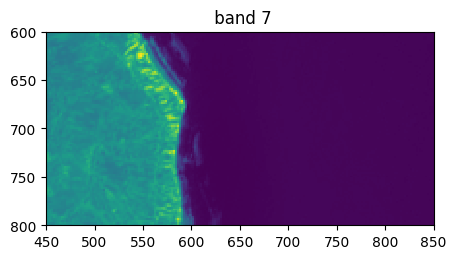
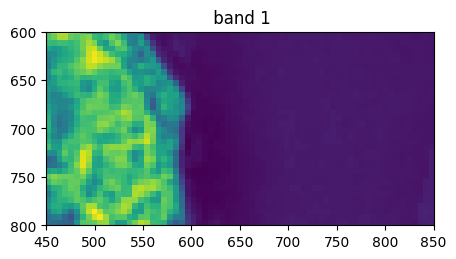
Histograms
help(image.hist)
Help on method hist in module rastereasy.rastereasy:
hist(**args) method of rastereasy.rastereasy.Geoimage instance
Display histograms of the image data.
This method provides a flexible way to visualize the distribution of pixel values
in one or more bands of the image. It supports various customization options for
the histogram display.
Parameters
----------
bands : str, int, list, optional
The bands to visualize. If not specified, all bands are included.
This can be band names (e.g., ["NIR", "R", "G"]) or indices (e.g., [4, 3, 2]).
superpose : bool, optional
If True, all histograms are plotted on the same figure. If False (default),
each band gets its own separate histogram figure.
bins : int, optional
The number of bins for computing the histogram. Default is 100.
xmin : float, optional
The minimum value to plot on the x-axis. Values lower than this won't be displayed.
xmax : float, optional
The maximum value to plot on the x-axis. Values higher than this won't be displayed.
title : str, optional
The title for the histogram figure.
histtype : str, optional
The type of histogram to draw. Default is 'stepfilled'.
Other options include 'bar', 'step', 'barstacked', etc.
alpha : float, optional
The transparency of the histogram bars (0.0 to 1.0). Default is 0.6.
fig_size : tuple, optional
The size of the figure in inches as (width, height). Default is DEF_FIG_SIZE.
label : str or list of str, optional
The labels for the histogram. If not provided, default labels will be created.
zoom : tuple, optional
To plot hist only on a window of the image
If based on pixel coordinates, you must indicate
- the row/col coordinades of
the north-west corner (deb_row,deb_col)
- the row/col coordinades of
the south-east corner (end_row,end_col)
in a tuple `zoom = ((deb_row,end_row),(deb_col,end_col))`
If based on latitude/longitude coordinates, you must indicate
- the lat/lon coordinades of the north-west corner (lat1,lon1)
- the lat/lon coordinades of the south-east corner (lat2,lon2)
`zoom = ((lon1,lon2),(lat1,lat2))`
If not provide, plot hist of the entire image
pixel : bool, optional
Coordinate system flag, if zoom is given:
- If True: Coordinates are interpreted as pixel indices
- If False: Coordinates are interpreted as geographic coordinates
Default is True.
**args : dict, optional
Additional keyword arguments passed to matplotlib's hist function.
Returns
-------
None
This method displays the histogram(s) but doesn't return any values.
Examples
--------
>>> # Display histograms for all bands
>>> image.hist(bins=100)
>>>
>>> # Display histogram for a single band with customization
>>> image.hist(bands="NIR", bins=150, histtype='stepfilled',
>>> title="NIR Band Distribution", xmin=0, xmax=10000)
>>>
>>> # Superpose histograms from multiple bands
>>> image.hist(bands=["NIR", "R", "G"], bins=100, superpose=True,
>>> alpha=0.7, fig_size=(10, 6))
>>>
>>> # Superpose histograms on a zoom from multiple bands
>>> image.hist(bands=["NIR", "R", "G"], bins=100, superpose=True,
>>> alpha=0.7, fig_size=(10, 6), zoom = ((40,150),(100,300)))
Notes
-----
This method is based on rasterio's show_hist function and supports most
of matplotlib's histogram customization options. It's useful for understanding
the distribution of values in your image and identifying potential issues like
saturation, quantization, or outliers.
By bands
# Show all bands
image.hist(bins=150,histtype='stepfilled',fig_size=(5,5))
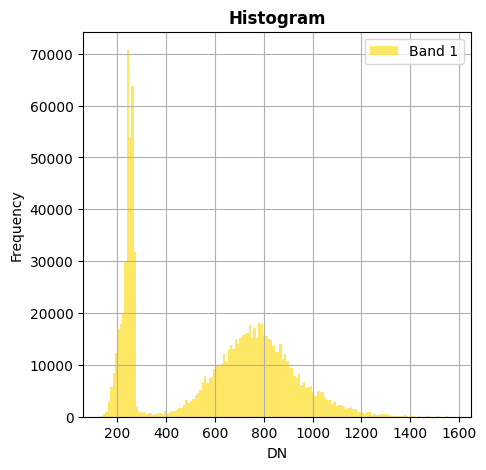
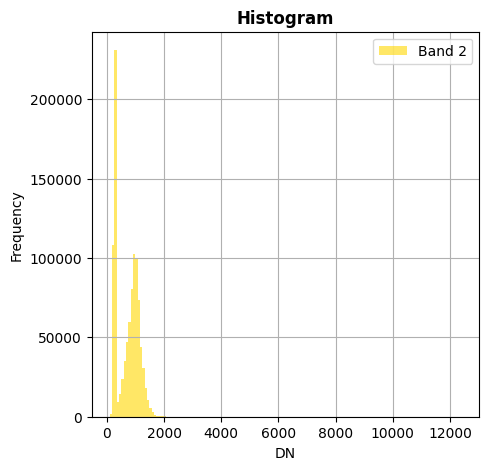
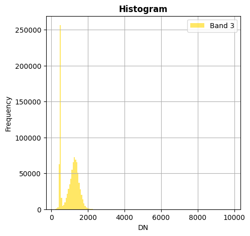
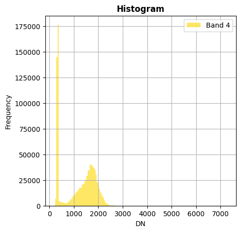
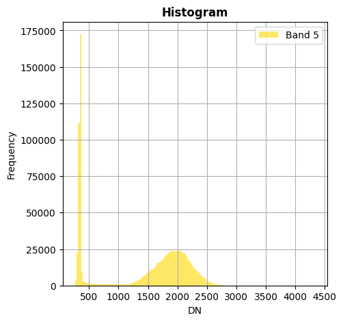
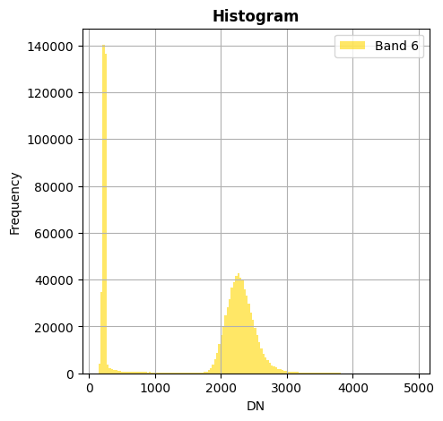
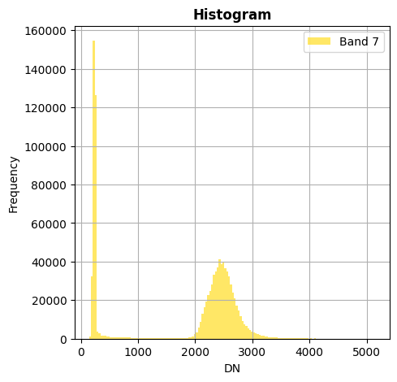
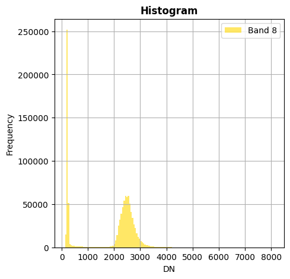
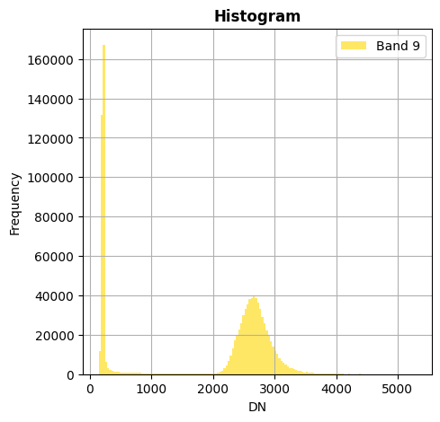
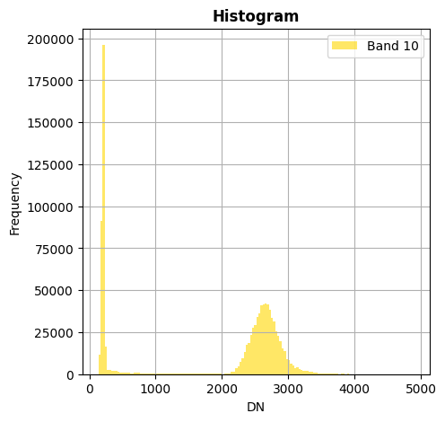
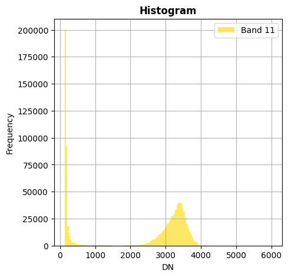
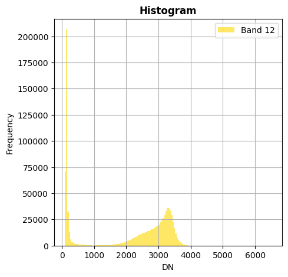
Superposition of bands
image_names.hist(bins=150,histtype='stepfilled',superpose=True, xmax=4500)
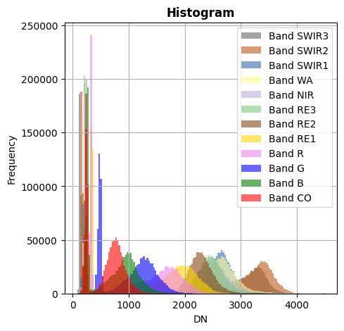
Show only some bands
Without superposition
image.hist(bands=["2","10"],bins=150,histtype='stepfilled',fig_size=(4,4),xmax=1500)
image.hist(bands=8,bins=150,histtype='stepfilled',label='Example of band')
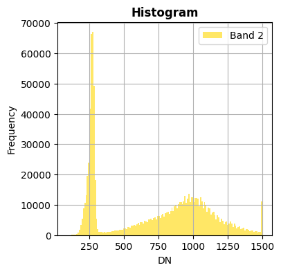
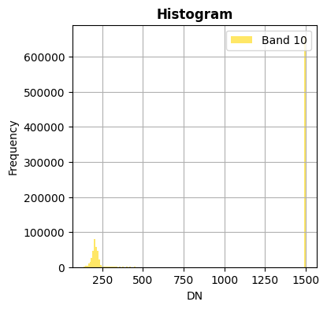
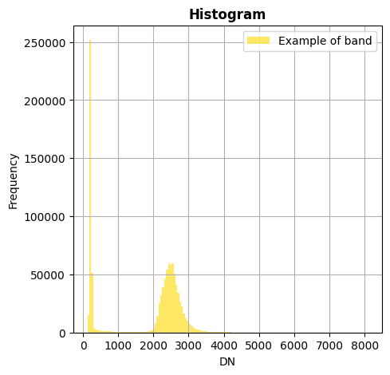
With superposition
image.hist(bands=[8,4],bins=150,histtype='stepfilled',label='Example of band',superpose=True,xmin=0,xmax=4000)
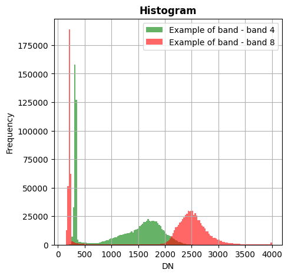
image_names.hist(bands=["R","G","NIR"],bins=150,histtype='stepfilled',superpose = True,label=["R","band swir","bleu"],xmax=4000)
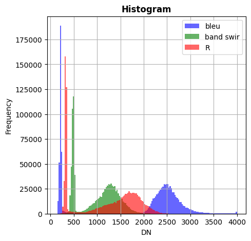
Histogram on a part of the image
Use the parameter zoom
Without superposition
image.hist(bands=["2","3"],zoom=((200,500),(300,400)), bins=150,histtype='stepfilled',fig_size=(4,4),xmax=1500)
image.hist(bands=8,zoom=((200,500),(300,400)), bins=150,histtype='stepfilled',label='Example of band')
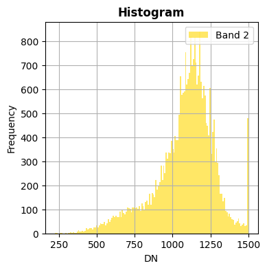
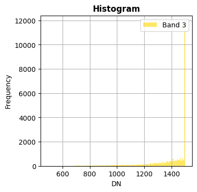
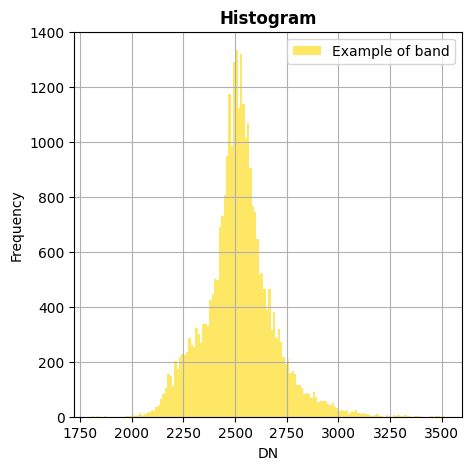
With superposition
image.hist(bands=[8,4],zoom=((200,500),(300,400)),bins=150,histtype='stepfilled',label='Example of band',superpose=True,xmin=0,xmax=4000)
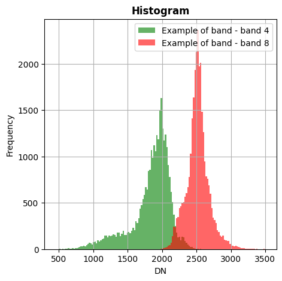
image_names.hist(bands=["R","G","NIR"],zoom=((200,500),(300,400)),bins=150,histtype='stepfilled',superpose = True,label=["R","band swir","bleu"],xmax=4000)
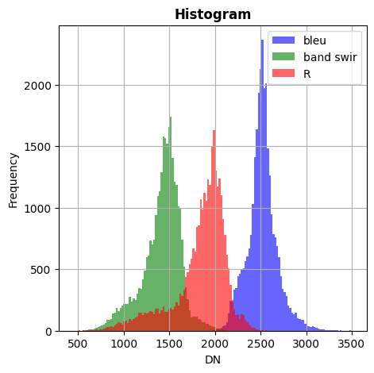